| LBS/GPS | ||||||||||||||||||||||||||||||||||||||||||||||||||||||||||||||||||||||||||||||||||||||||||||||||||||||||||||||||||||||||||||||||
|
This post is for LBS and GPS/A-GPS. But I am not an expert on this subject and this is purely my personal study note at the very initial learning curve. The current stage is just to create a coarse cognitive mesh and as time goes it this mesh will get finer until I get the full understanding on this subject.
The main focus will be on the technical details on A-GPS testing as a part of mobile phone testing and this initial post will be centered around A-GPS and its testing in UMTS (WCDMA). (For now, I haven't found any detailed material on A-GPS with LTE technology). The 3GPP specification for framing this post is 34.171 and I got many of cross reference specification from 34.171.
What is GPS and How it works ?
To this question, I think you would have better answers from many sources on the internet than my own explanation. As mentioned above, I don't have much experties on this subject to explain it in plain term but fortunately I found many resources as linked below to give you intuitive idea on GPS and its operation mechanism.
If you want to understand on GPS more in depth, refer to the following sites.
As you may noticed throughout my sites, my approach to understand a specific mobile/wireless technology in detail is always start with understanding the detailed frame structure of the signal being transmitted/recieved in the technology.
Following is the overal frame structure of the GPS signal (I will put further details as I get more understanding of this frame structure).
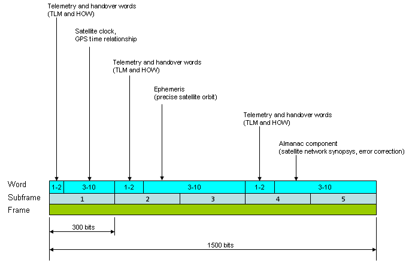
One of the problems in GPS is that the data transmission rate is very low (only 50 bits per second). So it would take long time to receive the whole set of information to find a location. Following shows the time to download the whole data set to figure out a specific location.
GPS Message Frame Transmission speed = 50 bits/sec It takes 6 seconds to transmit one subframe (300 bits) and takes 30 seconds to transmit a frame (1500 bits). One complete Almanac information is worth 15,000 bits which needs 25 frames. So it takes 750 seconds (=25 x 30 sec = 12.5 min) to receive the whole Almanac.
As you see, it would take 12.5 minutes to download the whole Almanac and it would take even longer if the signal quality gets poor and the reciever fails to decode any portions of this data.
There is another problem with GPS in addition to the extremly slow data rate described above. As you may experienced, GPS can work only at out doors which can have direct visibility (line of sight) to GPS satellites.
To overcome these major problems described above, a technology called A-GPS was invented.
Three Critical Information - Almanac, Ephemeris and Clock
To determine the location of the GPS satellites two types of data are required by the GPS receiver: the almanac and the ephemeris. This data is continuously transmitted by the GPS satellites and your GPS receiver collects and stores this data.
Almanac data is data that describes the orbital courses of the satellites. Every satellite will broadcast almanac data for EVERY satellite. Your GPS receiver uses this data to determine which satellites it expects to see in the local sky. It can then determine which satellites it should track. With Almanac data the receiver can concentrate on those satellites it can see and forget about those that would be over the horizon and out of view. Almanac data is not precise and can be valid for many months.
Following is the Almanac data for one GPS satellite. A GPS satellite transmits this information for Every GPS satellite.
Following is an illustration to help you understand each parameters contained in Almanac data (Some parameters in Almanac should be derived by a couple of formula which is not shown in this figure).
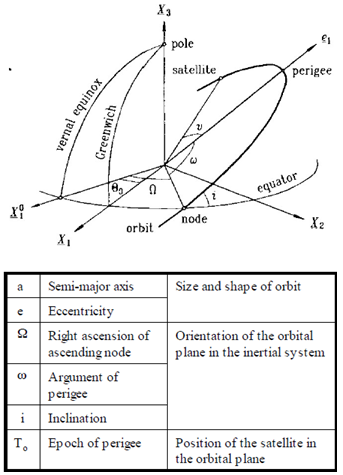
Ephemeris data is data that tells the GPS receiver where each GPS satellite should be at any time throughout the day. Each satellite will broadcast its OWN ephemeris data showing the orbital information for that satellite only. Because ephemeris data is very precise orbital and clock correction data necessary for precise positioning, its validity is much shorter. It is broadcast in three six second blocks repeated every 30 seconds. The data is considered valid for up to 4 hours but different manufacturers consider it valid for different periods with some treating it as stale after only 2 hours.
Following is an illustration to help you understand each parameters contained in Ephemeris data 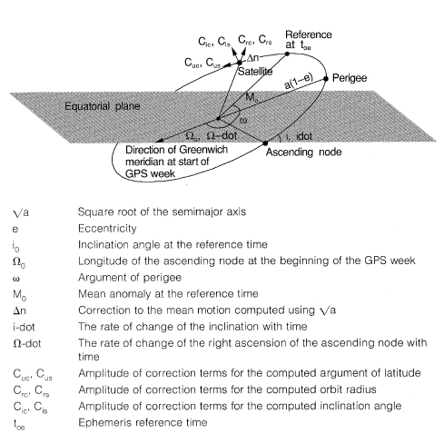
A-GPS stands for Assisted GPS. So if you just interprete this literally, A-GPS is a kind of GPS which gets assistance from other technology. I would say A-GPS is a kind of 'Evolved' version of existing (conventional) GPS. Why the existing GPS needs any assistance ? what kind of assistance is it getting ? Many different types of assistance it can get from various other technologies, but major assisstances are as follows.
Then, what kind of technologies can provide the conventional GPS with these kind of assistance ? Again, there can be many different kind of technology which can provide these assistance, but the most widely used technology for A-GPS is the one from the mobile phone and mobile network which enables the operation of mobile phone .
This post will be also centered around A-GPS on mobile phone. The way in which the mobile phone technology can 'Assist' the conventional GPS is simple in concept. As you know, all the mobile phone technology that we currently using has much higher data rate than the GPS data rate. At least, much higher than 50 bits/sec -:). So if a GPS reciever can receive Almanac data from the mobile phone network than from the GPS satellite, it would take much shorter to get the whole set of data for the calculation of the location. Another advantage of having the mobile phone technology would be that now the GPS can have a certain degree of penetration to in-door area.
Is GPS enough for positioning ?
The simple answer is "NO". For use GPS as a location system, you should be in such an open space where you can see at least four satellite. If you are in a very narrow path between very high buildings tightly closed to each other or if you are inside of a building, positioning based on GPS would not work. On the contrary, most of mobile communication system can penetrate into this kind of narrow/closed space. Is there any way to utilize these mobile communication system (e.g, BTS, NodeB, eNodeB) as a positioning system ? The answer is "Yes" and a lot of technique are already being used and followings are the list of technology.
For the overview of each of these technology, refer to Erricson Whitepaper : Positioning with LTE (If this link does not work, try this)
Two Types of A-GPS on Mobile Phone Technology
We have two major type of A-GPS by mobile phone technology depending on the way it transfer the information to the reciever. One is by using the signaling message (radio message, control message) and the other one is by using the dedicated data transfer channel. The one using the signaling message is called 'C-Plane A-GPS' and the one using the data channel is called 'U-Plane A-GPS'. The most commonly used technology for 'U-Plane A-GPS' is what we call 'SUPL' (Secure User Plan Location). I will add a separate sections for SUPL later.
There are two main RRC information for C-Plan A-GPS. One is with SIB and the other is with Measurement Control/Measurement Report. This section is to show all the information elements on SIB15, SIB15bis which broadcast A-GPS related information. I will just shows all the information elements for now since I don't have any detailed knowledge on each of these information elements. (This is my next step to study on A-GPS).
Following is the 3GPP specification which you can find detailed information on these information elements.
25.331 - 10.2.48.8.18 System Information Block type 15 34.108 - 10.2 Information elements required for normal UE based testing
SysInfoType15 ::= SEQUENCE [111] +-ue-positioning-GPS-CipherParameters ::= SEQUENCE OPTIONAL:Exist | +-cipheringKeyFlag ::= BIT STRING SIZE(1) [0] | +-cipheringSerialNumber ::= INTEGER (0..65535) [0] +-ue-positioning-GPS-ReferenceLocation ::= SEQUENCE | +-ellipsoidPointAltitudeEllipsoide ::= SEQUENCE | +-latitudeSign ::= ENUMERATED [north] | +-latitude ::= INTEGER (0..8388607) [0] | +-longitude ::= INTEGER (-8388608..8388607) [-8388608] | +-altitudeDirection ::= ENUMERATED [height] | +-altitude ::= INTEGER (0..32767) [0] | +-uncertaintySemiMajor ::= INTEGER (0..127) [0] | +-uncertaintySemiMinor ::= INTEGER (0..127) [0] | +-orientationMajorAxis ::= INTEGER (0..89) [0] | +-uncertaintyAltitude ::= INTEGER (0..127) [0] | +-confidence ::= INTEGER (0..100) [0] +-ue-positioning-GPS-ReferenceTime ::= SEQUENCE [1111] | +-gps-Week ::= INTEGER (0..1023) [0] | +-gps-tow-1msec ::= INTEGER (0..604799999) [0] | +-utran-GPSReferenceTime ::= SEQUENCE [0] OPTIONAL:Exist | | +-utran-GPSTimingOfCell ::= SEQUENCE | | | +-ms-part ::= INTEGER (0..1023) [0] | | | +-ls-part ::= INTEGER (0..4294967295) [0] | | +-modeSpecificInfo ::= CHOICE OPTIONAL:Omit | | +-sfn ::= INTEGER (0..4095) [0] | +-sfn-tow-Uncertainty ::= ENUMERATED [lessThan10] OPTIONAL:Exist | +-utran-GPS-DriftRate ::= ENUMERATED [utran-GPSDrift0] OPTIONAL:Exist | +-gps-TOW-AssistList ::= SEQUENCE OF SIZE(1..maxSat[16]) [1] OPTIONAL:Exist | +-GPS-TOW-Assist ::= SEQUENCE | +-satID ::= INTEGER (0..63) [0] | +-tlm-Message ::= BIT STRING SIZE(14) [00000000000000] | +-tlm-Reserved ::= BIT STRING SIZE(2) [00] | +-alert ::= BOOLEAN [FALSE] | +-antiSpoof ::= BOOLEAN [FALSE] +-ue-positioning-GPS-Real-timeIntegrity ::= SEQUENCE OF SIZE(1..maxSat[16]) [1] OPTIONAL:Exist | +- ::= INTEGER (0..63) [0] +-v4b0NonCriticalExtensions ::= SEQUENCE [1] OPTIONAL:Exist +-sysInfoType15-v4b0ext ::= SEQUENCE [0] | +-up-Ipdl-Parameters-TDD ::= SEQUENCE OPTIONAL:Omit +-v770NonCriticalExtensions ::= SEQUENCE [1] OPTIONAL:Exist +-sysInfoType15-v770ext ::= SEQUENCE | +-ue-Positioning-GPS-ReferenceTime ::= SEQUENCE [1] | +-ue-Positioning-GPS-ReferenceTimeUncertainty ::= INTEGER (0..127) [0] OPTIONAL:Exist +-nonCriticalExtensions ::= SEQUENCE OPTIONAL:Exist
SysInfoType15-1 ::= SEQUENCE [1] +-ue-positioning-GPS-DGPS-Corrections ::= SEQUENCE | +-gps-TOW ::= INTEGER (0..604799) [0] | +-statusHealth ::= ENUMERATED [udre-1-0] | +-dgps-CorrectionSatInfoList ::= SEQUENCE OF SIZE(1..maxSat[16]) [1] | +-DGPS-CorrectionSatInfo ::= SEQUENCE [00] | +-satID ::= INTEGER (0..63) [0] | +-iode ::= INTEGER (0..255) [0] | +-udre ::= ENUMERATED [lessThan1] | +-prc ::= INTEGER (-2047..2047) [-2047] | +-rrc ::= INTEGER (-127..127) [-127] | +-dummy1 ::= INTEGER (-127..127) [-127] | +-dummy2 ::= INTEGER (-7..7) [-7] | +-dummy3 ::= INTEGER OPTIONAL:Omit | +-dummy4 ::= INTEGER OPTIONAL:Omit +-nonCriticalExtensions ::= SEQUENCE OPTIONAL:Exist
SysInfoType15-2 ::= SEQUENCE [1] +-transmissionTOW ::= INTEGER (0..604799) [0] +-satID ::= INTEGER (0..63) [0] +-ephemerisParameter ::= SEQUENCE | +-codeOnL2 ::= BIT STRING SIZE(2) [00] | +-uraIndex ::= BIT STRING SIZE(4) [0000] | +-satHealth ::= BIT STRING SIZE(6) [000000] | +-iodc ::= BIT STRING SIZE(10) [0000000000] | +-l2Pflag ::= BIT STRING SIZE(1) [0] | +-sf1Revd ::= SEQUENCE | | +-reserved1 ::= BIT STRING SIZE(23) [00000000000000000000000] | | +-reserved2 ::= BIT STRING SIZE(24) [000000000000000000000000] | | +-reserved3 ::= BIT STRING SIZE(24) [000000000000000000000000] | | +-reserved4 ::= BIT STRING SIZE(16) [0000000000000000] | +-t-GD ::= BIT STRING SIZE(8) [00000000] | +-t-oc ::= BIT STRING SIZE(16) [0000000000000000] | +-af2 ::= BIT STRING SIZE(8) [00000000] | +-af1 ::= BIT STRING SIZE(16) [0000000000000000] | +-af0 ::= BIT STRING SIZE(22) [0000000000000000000000] | +-c-rs ::= BIT STRING SIZE(16) [0000000000000000] | +-delta-n ::= BIT STRING SIZE(16) [0000000000000000] | +-m0 ::= BIT STRING SIZE(32) [00000000000000000000000000000000] | +-c-uc ::= BIT STRING SIZE(16) [0000000000000000] | +-e ::= BIT STRING SIZE(32) [00000000000000000000000000000000] | +-c-us ::= BIT STRING SIZE(16) [0000000000000000] | +-a-Sqrt ::= BIT STRING SIZE(32) [00000000000000000000000000000000] | +-t-oe ::= BIT STRING SIZE(16) [0000000000000000] | +-fitInterval ::= BIT STRING SIZE(1) [0] | +-aodo ::= BIT STRING SIZE(5) [00000] | +-c-ic ::= BIT STRING SIZE(16) [0000000000000000] | +-omega0 ::= BIT STRING SIZE(32) [00000000000000000000000000000000] | +-c-is ::= BIT STRING SIZE(16) [0000000000000000] | +-i0 ::= BIT STRING SIZE(32) [00000000000000000000000000000000] | +-c-rc ::= BIT STRING SIZE(16) [0000000000000000] | +-omega ::= BIT STRING SIZE(32) [00000000000000000000000000000000] | +-omegaDot ::= BIT STRING SIZE(24) [000000000000000000000000] | +-iDot ::= BIT STRING SIZE(14) [00000000000000] +-nonCriticalExtensions ::= SEQUENCE OPTIONAL:Exist
SysInfoType15-3 ::= SEQUENCE [111111] +-transmissionTOW ::= INTEGER (0..604799) [0] +-ue-positioning-GPS-Almanac ::= SEQUENCE [0] OPTIONAL:Exist | +-wn-a ::= BIT STRING SIZE(8) [00000000] | +-almanacSatInfoList ::= SEQUENCE OF SIZE(1..maxSat[16]) [1] | | +-AlmanacSatInfo ::= SEQUENCE | | +-dataID ::= INTEGER (0..3) [0] | | +-satID ::= INTEGER (0..63) [0] | | +-e ::= BIT STRING SIZE(16) [0000000000000000] | | +-t-oa ::= BIT STRING SIZE(8) [00000000] | | +-deltaI ::= BIT STRING SIZE(16) [0000000000000000] | | +-omegaDot ::= BIT STRING SIZE(16) [0000000000000000] | | +-satHealth ::= BIT STRING SIZE(8) [00000000] | | +-a-Sqrt ::= BIT STRING SIZE(24) [000000000000000000000000] | | +-omega0 ::= BIT STRING SIZE(24) [000000000000000000000000] | | +-m0 ::= BIT STRING SIZE(24) [000000000000000000000000] | | +-omega ::= BIT STRING SIZE(24) [000000000000000000000000] | | +-af0 ::= BIT STRING SIZE(11) [00000000000] | | +-af1 ::= BIT STRING SIZE(11) [00000000000] | +-sv-GlobalHealth ::= BIT STRING OPTIONAL:Omit +-ue-positioning-GPS-IonosphericModel ::= SEQUENCE OPTIONAL:Exist | +-alpha0 ::= BIT STRING SIZE(8) [00000000] | +-alpha1 ::= BIT STRING SIZE(8) [00000000] | +-alpha2 ::= BIT STRING SIZE(8) [00000000] | +-alpha3 ::= BIT STRING SIZE(8) [00000000] | +-beta0 ::= BIT STRING SIZE(8) [00000000] | +-beta1 ::= BIT STRING SIZE(8) [00000000] | +-beta2 ::= BIT STRING SIZE(8) [00000000] | +-beta3 ::= BIT STRING SIZE(8) [00000000] +-ue-positioning-GPS-UTC-Model ::= SEQUENCE OPTIONAL:Exist | +-a1 ::= BIT STRING SIZE(24) [000000000000000000000000] | +-a0 ::= BIT STRING SIZE(32) [00000000000000000000000000000000] | +-t-ot ::= BIT STRING SIZE(8) [00000000] | +-wn-t ::= BIT STRING SIZE(8) [00000000] | +-delta-t-LS ::= BIT STRING SIZE(8) [00000000] | +-wn-lsf ::= BIT STRING SIZE(8) [00000000] | +-dn ::= BIT STRING SIZE(8) [00000000] | +-delta-t-LSF ::= BIT STRING SIZE(8) [00000000] +-satMask ::= BIT STRING SIZE(1..32) [0] OPTIONAL:Exist +-lsbTOW ::= BIT STRING SIZE(8) [00000000] OPTIONAL:Exist +-nonCriticalExtensions ::= SEQUENCE OPTIONAL:Exist
SysInfoType15-4 ::= SEQUENCE [11] +-ue-positioning-OTDOA-CipherParameters ::= SEQUENCE OPTIONAL:Exist | +-cipheringKeyFlag ::= BIT STRING SIZE(1) [0] | +-cipheringSerialNumber ::= INTEGER (0..65535) [0] +-ue-positioning-OTDOA-AssistanceData ::= SEQUENCE [11] | +-ue-positioning-OTDOA-ReferenceCellInfo ::= SEQUENCE [000] OPTIONAL:Exist | | +-sfn ::= INTEGER OPTIONAL:Omit | | +-modeSpecificInfo ::= CHOICE [fdd] | | | +-fdd ::= SEQUENCE | | | +-primaryCPICH-Info ::= SEQUENCE | | | +-primaryScramblingCode ::= INTEGER (0..511) [0] | | +-frequencyInfo ::= SEQUENCE OPTIONAL:Omit | | +-positioningMode ::= CHOICE [ueBased] | | | +-ueBased ::= SEQUENCE | | +-ue-positioning-IPDL-Paremeters ::= SEQUENCE OPTIONAL:Omit | +-ue-positioning-OTDOA-NeighbourCellList ::= SEQUENCE OF SIZE(1..maxCellMeas[32]) [1] OPTIONAL:Exist | +-UE-Positioning-OTDOA-NeighbourCellInfo ::= SEQUENCE [111] | +-modeSpecificInfo ::= CHOICE [fdd] | | +-fdd ::= SEQUENCE | | +-primaryCPICH-Info ::= SEQUENCE | | +-primaryScramblingCode ::= INTEGER (0..511) [0] | +-frequencyInfo ::= SEQUENCE OPTIONAL:Exist | | +-modeSpecificInfo ::= CHOICE [fdd] | | +-fdd ::= SEQUENCE [0] | | +-uarfcn-UL ::= INTEGER OPTIONAL:Omit | | +-uarfcn-DL ::= INTEGER (0..16383) [0] | +-ue-positioning-IPDL-Paremeters ::= SEQUENCE [0] OPTIONAL:Exist | | +-ip-Spacing ::= ENUMERATED [e5] | | +-ip-Length ::= ENUMERATED [ipl5] | | +-ip-Offset ::= INTEGER (0..9) [0] | | +-seed ::= INTEGER (0..63) [0] | | +-burstModeParameters ::= SEQUENCE OPTIONAL:Omit | +-sfn-SFN-RelTimeDifference ::= SEQUENCE | | +-sfn-Offset ::= INTEGER (0..4095) [0] | | +-sfn-sfn-Reltimedifference ::= INTEGER (0..38399) [0] | +-sfn-SFN-Drift ::= ENUMERATED [sfnsfndrift0] OPTIONAL:Exist | +-searchWindowSize ::= ENUMERATED [c20] | +-positioningMode ::= CHOICE [ueBased] | +-ueBased ::= SEQUENCE +-v3a0NonCriticalExtensions ::= SEQUENCE [1] OPTIONAL:Exist +-sysInfoType15-4-v3a0ext ::= SEQUENCE [1] | +-sfn-Offset-Validity ::= ENUMERATED [false] OPTIONAL:Exist +-v4b0NonCriticalExtensions ::= SEQUENCE [1] OPTIONAL:Exist +-sysInfoType15-4-v4b0ext ::= SEQUENCE [1] | +-ue-Positioning-OTDOA-AssistanceData-r4ext ::= SEQUENCE [00] OPTIONAL:Exist | +-ue-Positioning-IPDL-Parameters-TDD-r4-ext ::= SEQUENCE OPTIONAL:Omit | +-ue-Positioning-IPDL-Parameters-TDDList-r4-ext ::= SEQUENCE OF OPTIONAL:Omit +-nonCriticalExtensions ::= SEQUENCE OPTIONAL:Exist
SysInfoType15-5 ::= SEQUENCE [1] +-ue-positioning-OTDOA-AssistanceData-UEB ::= SEQUENCE [11] | +-ue-positioning-OTDOA-ReferenceCellInfo-UEB ::= SEQUENCE [11111] OPTIONAL:Exist | | +-sfn ::= INTEGER (0..4095) [0] OPTIONAL:Exist | | +-modeSpecificInfo ::= CHOICE [fdd] | | | +-fdd ::= SEQUENCE | | | +-primaryCPICH-Info ::= SEQUENCE | | | +-primaryScramblingCode ::= INTEGER (0..511) [0] | | +-frequencyInfo ::= SEQUENCE OPTIONAL:Exist | | | +-modeSpecificInfo ::= CHOICE [fdd] | | | +-fdd ::= SEQUENCE [0] | | | +-uarfcn-UL ::= INTEGER OPTIONAL:Omit | | | +-uarfcn-DL ::= INTEGER (0..16383) [0] | | +-cellPosition ::= CHOICE [ellipsoidPoint] OPTIONAL:Exist | | | +-ellipsoidPoint ::= SEQUENCE | | | +-latitudeSign ::= ENUMERATED [north] | | | +-latitude ::= INTEGER (0..8388607) [0] | | | +-longitude ::= INTEGER (-8388608..8388607) [-8388608] | | +-roundTripTime ::= INTEGER (0..32766) [0] OPTIONAL:Exist | | +-ue-positioning-IPDL-Paremeters ::= SEQUENCE [0] OPTIONAL:Exist | | +-ip-Spacing ::= ENUMERATED [e5] | | +-ip-Length ::= ENUMERATED [ipl5] | | +-ip-Offset ::= INTEGER (0..9) [0] | | +-seed ::= INTEGER (0..63) [0] | | +-burstModeParameters ::= SEQUENCE OPTIONAL:Omit | +-ue-positioning-OTDOA-NeighbourCellList-UEB ::= SEQUENCE OF SIZE(1..maxCellMeas[32]) [1] OPTIONAL:Exist | +-UE-Positioning-OTDOA-NeighbourCellInfo-UEB ::= SEQUENCE [0000000] | +-modeSpecificInfo ::= CHOICE [fdd] | | +-fdd ::= SEQUENCE | | +-primaryCPICH-Info ::= SEQUENCE | | +-primaryScramblingCode ::= INTEGER (0..511) [0] | +-frequencyInfo ::= SEQUENCE OPTIONAL:Omit | +-ue-positioning-IPDL-Paremeters ::= SEQUENCE OPTIONAL:Omit | +-sfn-SFN-RelTimeDifference ::= SEQUENCE | | +-sfn-Offset ::= INTEGER (0..4095) [0] | | +-sfn-sfn-Reltimedifference ::= INTEGER (0..38399) [0] | +-sfn-SFN-Drift ::= ENUMERATED OPTIONAL:Omit | +-searchWindowSize ::= ENUMERATED [c20] | +-relativeNorth ::= INTEGER OPTIONAL:Omit | +-relativeEast ::= INTEGER OPTIONAL:Omit | +-relativeAltitude ::= INTEGER OPTIONAL:Omit | +-fineSFN-SFN ::= INTEGER (0..15) [0] | +-roundTripTime ::= INTEGER OPTIONAL:Omit +-v3a0NonCriticalExtensions ::= SEQUENCE [1] OPTIONAL:Exist +-sysInfoType15-5-v3a0ext ::= SEQUENCE [1] | +-sfn-Offset-Validity ::= ENUMERATED [false] OPTIONAL:Exist +-v770NonCriticalExtensions ::= SEQUENCE [1] OPTIONAL:Exist +-sysInfoType15-5-v770ext ::= SEQUENCE [1] | +-ue-Positioning-OTDOA-AssistanceData-UEB-ext ::= SEQUENCE [11] OPTIONAL:Exist | +-ue-positioning-OTDOA-ReferenceCellInfo-UEB-ext ::= SEQUENCE [1] OPTIONAL:Exist | | +-roundTripTimeExtension ::= INTEGER (0..70274) [0] OPTIONAL:Exist | +-ue-positioning-OTDOA-NeighbourCellList-UEB-ext ::= SEQUENCE OF SIZE(1..maxCellMeas[32]) [1] OPTIONAL:Exist | +-UE-Positioning-OTDOA-NeighbourCellInfo-UEB-ext ::= SEQUENCE [1] | +-roundTripTimeExtension ::= INTEGER (0..70274) [0] OPTIONAL:Exist +-nonCriticalExtensions ::= SEQUENCE OPTIONAL:Exist
SysInfoType15-6 ::= SEQUENCE [1] +-ue-positioning-GANSS-TOD ::= INTEGER (0..86399) [0] +-ue-positioning-GANSS-ReferenceMeasurementInformation ::= SEQUENCE [1] | +-ganssSignalId ::= INTEGER (0..7) [0] OPTIONAL:Exist | +-satelliteInformationList ::= SEQUENCE OF SIZE(1..maxGANSSSat[64]) [1] | +-GANSSSatelliteInformation ::= SEQUENCE [11] | +-ganssSatId ::= INTEGER (0..63) [0] | +-dopplerZeroOrder ::= INTEGER (-2048..2047) [-2048] | +-extraDoppler ::= SEQUENCE OPTIONAL:Exist | | +-dopplerFirstOrder ::= INTEGER (-42..21) [-42] | | +-dopplerUncertainty ::= ENUMERATED [dopU40] | +-codePhase ::= INTEGER (0..1023) [0] | +-integerCodePhase ::= INTEGER (0..127) [0] | +-codePhaseSearchWindow ::= BIT STRING SIZE(5) [00000] | +-azimuthandElevation ::= SEQUENCE OPTIONAL:Exist | +-azimuth ::= INTEGER (0..31) [0] | +-elevation ::= INTEGER (0..7) [0] +-nonCriticalExtensions ::= SEQUENCE OPTIONAL:Exist
SysInfoType15-7 ::= SEQUENCE [1] +-ue-positioning-GANSS-DataBitAssistance ::= SEQUENCE | +-ganss-tod ::= INTEGER (0..59) [0] | +-dataBitAssistanceList ::= SEQUENCE OF SIZE(1..maxGANSSSat[64]) [1] | +-DataBitAssistanceSat ::= SEQUENCE | +-satID ::= INTEGER (0..63) [0] | +-dataBitAssistanceSgnList ::= SEQUENCE OF SIZE(1..maxSgnType[8]) [1] | +-DataBitAssistance ::= SEQUENCE | +-ganss-signal-id ::= INTEGER (0..7) [0] | +-data-bits ::= BIT STRING SIZE(1..1024) [0] +-nonCriticalExtensions ::= SEQUENCE OPTIONAL:Exist
SysInfoType15-8 ::= SEQUENCE [111] +-ue-positioning-GANSS-DataCipheringInfo ::= SEQUENCE OPTIONAL:Exist | +-cipheringKeyFlag ::= BIT STRING SIZE(1) [0] | +-cipheringSerialNumber ::= INTEGER (0..65535) [0] +-ue-positioning-GANSS-realTimeIntegrity ::= SEQUENCE OF SIZE(1..maxGANSSSat[64]) [1] OPTIONAL:Exist | +- ::= SEQUENCE [0] | +-bad-ganss-satId ::= INTEGER (0..63) [0] | +-bad-ganss-signalId ::= BIT STRING OPTIONAL:Omit +-nonCriticalExtensions ::= SEQUENCE OPTIONAL:Exist
SysInfoType15bis ::= SEQUENCE [11] +-ue-positioning-GANSS-ReferencePosition ::= SEQUENCE | +-ellipsoidPointAltitudeEllipsoide ::= SEQUENCE | +-latitudeSign ::= ENUMERATED [north] | +-latitude ::= INTEGER (0..8388607) [0] | +-longitude ::= INTEGER (-8388608..8388607) [-8388608] | +-altitudeDirection ::= ENUMERATED [height] | +-altitude ::= INTEGER (0..32767) [0] | +-uncertaintySemiMajor ::= INTEGER (0..127) [0] | +-uncertaintySemiMinor ::= INTEGER (0..127) [0] | +-orientationMajorAxis ::= INTEGER (0..89) [0] | +-uncertaintyAltitude ::= INTEGER (0..127) [0] | +-confidence ::= INTEGER (0..100) [0] +-ue-positioning-GANSS-ReferenceTime ::= SEQUENCE [11111] | +-ganssDay ::= INTEGER (0..8191) [0] OPTIONAL:Exist | +-ganssTod ::= INTEGER (0..86399) [0] | +-ganssTodUncertainty ::= INTEGER (0..127) [0] OPTIONAL:Exist | +-ganssTimeId ::= INTEGER (0..7) [0] OPTIONAL:Exist | +-utran-ganssreferenceTime ::= SEQUENCE OPTIONAL:Exist | | +-timingOfCellFrames ::= INTEGER (0..3999999) [0] | | +-mode ::= CHOICE [fdd] | | | +-fdd ::= SEQUENCE | | | +-primary-CPICH-Info ::= SEQUENCE | | | +-primaryScramblingCode ::= INTEGER (0..511) [0] | | +-referenceSfn ::= INTEGER (0..4095) [0] | +-tutran-ganss-driftRate ::= ENUMERATED [ugdr0] OPTIONAL:Exist +-ue-positioning-GANSS-IonosphericModel ::= SEQUENCE [0] OPTIONAL:Exist | +-alpha-zero-ionos ::= BIT STRING SIZE(12) [000000000000] | +-alpha-one-ionos ::= BIT STRING SIZE(12) [000000000000] | +-alpha-two-ionos ::= BIT STRING SIZE(12) [000000000000] | +-gANSS-storm-flags ::= SEQUENCE OPTIONAL:Omit +-v860NonCriticalExtensions ::= SEQUENCE [1] OPTIONAL:Exist +-sysInfoType15bis-v860ext ::= SEQUENCE [11] | +-ue-Positioning-GANSS-AddIonoModel ::= SEQUENCE OPTIONAL:Exist | | +-dataID ::= BIT STRING SIZE(2) [00] | | +-alpha-beta-parameters ::= SEQUENCE | | +-alpha0 ::= BIT STRING SIZE(8) [00000000] | | +-alpha1 ::= BIT STRING SIZE(8) [00000000] | | +-alpha2 ::= BIT STRING SIZE(8) [00000000] | | +-alpha3 ::= BIT STRING SIZE(8) [00000000] | | +-beta0 ::= BIT STRING SIZE(8) [00000000] | | +-beta1 ::= BIT STRING SIZE(8) [00000000] | | +-beta2 ::= BIT STRING SIZE(8) [00000000] | | +-beta3 ::= BIT STRING SIZE(8) [00000000] | +-ue-Positioning-GANSS-EarthOrientationPara ::= SEQUENCE OPTIONAL:Exist | +-teop ::= BIT STRING SIZE(16) [0000000000000000] | +-pmX ::= BIT STRING SIZE(21) [000000000000000000000] | +-pmXdot ::= BIT STRING SIZE(15) [000000000000000] | +-pmY ::= BIT STRING SIZE(21) [000000000000000000000] | +-pmYdot ::= BIT STRING SIZE(15) [000000000000000] | +-deltaUT1 ::= BIT STRING SIZE(31) [0000000000000000000000000000000] | +-deltaUT1dot ::= BIT STRING SIZE(19) [0000000000000000000] +-nonCriticalExtensions ::= SEQUENCE OPTIONAL:Exist
SysInfoType15-1bis ::= SEQUENCE [1] +-ue-positioning-GANSS-DGANSS-Corrections ::= SEQUENCE | +-dganssreferencetime ::= INTEGER (0..119) [0] | +-dganssInfoList ::= SEQUENCE OF SIZE(1..maxSgnType[8]) [1] | +-DGANSSInfo ::= SEQUENCE [11] | +-ganssSignalId ::= INTEGER (0..7) [0] OPTIONAL:Exist | +-ganssStatusHealth ::= ENUMERATED [udre-scale-1dot0] | +-dgansssignalInformationList ::= SEQUENCE OF SIZE(1..maxGANSSSat[64]) [1] OPTIONAL:Exist | +-DGANSSSignalInformation ::= SEQUENCE | +-satId ::= INTEGER (0..63) [0] | +-iode-dganss ::= BIT STRING SIZE(10) [0000000000] | +-udre ::= ENUMERATED [lessThan1] | +-ganss-prc ::= INTEGER (-2047..2047) [-2047] | +-ganss-rrc ::= INTEGER (-127..127) [-127] +-nonCriticalExtensions ::= SEQUENCE OPTIONAL:Exist
SysInfoType15-2bis ::= SEQUENCE [1] +-ue-positioning-GANSS-navigationModel ::= SEQUENCE [1] | +-non-broadcastIndication ::= ENUMERATED [true] OPTIONAL:Exist | +-ganssSatInfoNavList ::= SEQUENCE OF SIZE(1..maxGANSSSat[64]) [1] | +-Ganss-Sat-Info-Nav ::= SEQUENCE | +-satId ::= INTEGER (0..63) [0] | +-svHealth ::= BIT STRING SIZE(5) [00000] | +-iod ::= BIT STRING SIZE(10) [0000000000] | +-ganssClockModel ::= SEQUENCE | | +-satellite-clock-modelList ::= SEQUENCE OF SIZE(1..maxSatClockModels[4]) [1] | | +-Satellite-clock-model ::= SEQUENCE [11] | | +-t-oc ::= BIT STRING SIZE(14) [00000000000000] | | +-af2 ::= BIT STRING SIZE(12) [000000000000] | | +-af1 ::= BIT STRING SIZE(18) [000000000000000000] | | +-af0 ::= BIT STRING SIZE(28) [0000000000000000000000000000] | | +-tgd ::= BIT STRING SIZE(10) [0000000000] OPTIONAL:Exist | | +-model-id ::= INTEGER (0..1) [0] OPTIONAL:Exist | +-ganssOrbitModel ::= SEQUENCE [0] | +-keplerianParameters ::= SEQUENCE OPTIONAL:Omit +-nonCriticalExtensions ::= SEQUENCE OPTIONAL:Exist
SysInfoType15-3bis ::= SEQUENCE [1111] +-ue-positioning-GANSS-Almanac ::= SEQUENCE [1] OPTIONAL:Exist | +-ganss-wk-number ::= INTEGER (0..255) [0] | +-alm-keplerianParameters ::= SEQUENCE OPTIONAL:Exist | +-t-oa ::= INTEGER (0..147) [0] | +-iod-a ::= INTEGER (0..3) [0] | +-sat-info-kpList ::= SEQUENCE OF SIZE(1..maxGANSSSat[64]) [1] | +-GANSS-SAT-Info-Almanac-Kp ::= SEQUENCE | +-svId ::= INTEGER (0..63) [0] | +-ganss-alm-e ::= BIT STRING SIZE(11) [00000000000] | +-ganss-delta-I-alm ::= BIT STRING SIZE(11) [00000000000] | +-ganss-omegadot-alm ::= BIT STRING SIZE(11) [00000000000] | +-ganss-svhealth-alm ::= BIT STRING SIZE(4) [0000] | +-ganss-delta-a-sqrt-alm ::= BIT STRING SIZE(17) [00000000000000000] | +-ganss-omegazero-alm ::= BIT STRING SIZE(16) [0000000000000000] | +-ganss-m-zero-alm ::= BIT STRING SIZE(16) [0000000000000000] | +-ganss-omega-alm ::= BIT STRING SIZE(16) [0000000000000000] | +-ganss-af-zero-alm ::= BIT STRING SIZE(14) [00000000000000] | +-ganss-af-one-alm ::= BIT STRING SIZE(11) [00000000000] +-ue-positioning-GANSS-TimeModels ::= SEQUENCE OF SIZE(1..maxGANSS-1[7]) [1] OPTIONAL:Exist | +-UE-Positioning-GANSS-TimeModel ::= SEQUENCE [111] | +-ganss-timeModelreferenceTime ::= INTEGER (0..37799) [0] | +-ganss-t-a0 ::= INTEGER (-2147483648..2147483647) [-2147483648] | +-ganss-t-a1 ::= INTEGER (-8388608..8388607) [-8388608] OPTIONAL:Exist | +-ganss-t-a2 ::= INTEGER (-64..63) [-64] OPTIONAL:Exist | +-gnss-to-id ::= ENUMERATED [gps] | +-ganss-wk-number ::= INTEGER (0..8191) [0] OPTIONAL:Exist +-ue-positioning-GANSS-UTC-Model ::= SEQUENCE OPTIONAL:Exist | +-a-one-utc ::= BIT STRING SIZE(24) [000000000000000000000000] | +-a-zero-utc ::= BIT STRING SIZE(32) [00000000000000000000000000000000] | +-t-ot-utc ::= BIT STRING SIZE(8) [00000000] | +-delta-t-ls-utc ::= BIT STRING SIZE(8) [00000000] | +-w-n-t-utc ::= BIT STRING SIZE(8) [00000000] | +-w-n-lsf-utc ::= BIT STRING SIZE(8) [00000000] | +-dn-utc ::= BIT STRING SIZE(8) [00000000] | +-delta-t-lsf-utc ::= BIT STRING SIZE(8) [00000000] +-v860NonCriticalExtensions ::= SEQUENCE [1] OPTIONAL:Exist +-sysInfoType15-3bis-v860ext ::= SEQUENCE [111] | +-ue-Positioning-GANSS-Almanac ::= SEQUENCE [11111] OPTIONAL:Exist | | +-alm-keplerianNAVAlmanac ::= SEQUENCE OPTIONAL:Exist | | | +-t-oa ::= INTEGER (0..147) [0] | | | +-sat-info-NAVkpList ::= SEQUENCE OF SIZE(1..maxGANSSSat[64]) [1] | | | +-GANSS-SAT-Info-Almanac-NAVkp ::= SEQUENCE | | | +-svID ::= INTEGER (0..63) [0] | | | +-navAlmE ::= BIT STRING SIZE(16) [0000000000000000] | | | +-navAlmDeltaI ::= BIT STRING SIZE(16) [0000000000000000] | | | +-navAlmOMEGADOT ::= BIT STRING SIZE(16) [0000000000000000] | | | +-navAlmSVHealth ::= BIT STRING SIZE(8) [00000000] | | | +-navAlmSqrtA ::= BIT STRING SIZE(24) [000000000000000000000000] | | | +-navAlmOMEGAo ::= BIT STRING SIZE(24) [000000000000000000000000] | | | +-navAlmOmega ::= BIT STRING SIZE(24) [000000000000000000000000] | | | +-navAlmMo ::= BIT STRING SIZE(24) [000000000000000000000000] | | | +-navAlmaf0 ::= BIT STRING SIZE(11) [00000000000] | | | +-navAlmaf1 ::= BIT STRING SIZE(11) [00000000000] | | +-alm-keplerianReducedAlmanac ::= SEQUENCE OPTIONAL:Exist | | | +-t-oa ::= INTEGER (0..147) [0] | | | +-sat-info-REDkpList ::= SEQUENCE OF SIZE(1..maxGANSSSat[64]) [1] | | | +-GANSS-SAT-Info-Almanac-REDkp ::= SEQUENCE | | | +-svID ::= INTEGER (0..63) [0] | | | +-redAlmDeltaA ::= BIT STRING SIZE(8) [00000000] | | | +-redAlmOmega0 ::= BIT STRING SIZE(7) [0000000] | | | +-redAlmPhi0 ::= BIT STRING SIZE(7) [0000000] | | | +-redAlmL1Health ::= BIT STRING SIZE(1) [0] | | | +-redAlmL2Health ::= BIT STRING SIZE(1) [0] | | | +-redAlmL5Health ::= BIT STRING SIZE(1) [0] | | +-alm-keplerianMidiAlmanac ::= SEQUENCE OPTIONAL:Exist | | | +-t-oa ::= INTEGER (0..147) [0] | | | +-sat-info-MIDIkpList ::= SEQUENCE OF SIZE(1..maxGANSSSat[64]) [1] | | | +-GANSS-SAT-Info-Almanac-MIDIkp ::= SEQUENCE | | | +-svID ::= INTEGER (0..63) [0] | | | +-midiAlmE ::= BIT STRING SIZE(11) [00000000000] | | | +-midiAlmDeltaI ::= BIT STRING SIZE(11) [00000000000] | | | +-midiAlmOmegaDot ::= BIT STRING SIZE(11) [00000000000] | | | +-midiAlmSqrtA ::= BIT STRING SIZE(17) [00000000000000000] | | | +-midiAlmOmega0 ::= BIT STRING SIZE(16) [0000000000000000] | | | +-midiAlmOmega ::= BIT STRING SIZE(16) [0000000000000000] | | | +-midiAlmMo ::= BIT STRING SIZE(16) [0000000000000000] | | | +-midiAlmaf0 ::= BIT STRING SIZE(11) [00000000000] | | | +-midiAlmaf1 ::= BIT STRING SIZE(10) [0000000000] | | | +-midiAlmL1Health ::= BIT STRING SIZE(1) [0] | | | +-midiAlmL2Health ::= BIT STRING SIZE(1) [0] | | | +-midiAlmL5Health ::= BIT STRING SIZE(1) [0] | | +-alm-keplerianGLONASS ::= SEQUENCE OPTIONAL:Exist | | | +-sat-info-GLOkpList ::= SEQUENCE OF SIZE(1..maxGANSSSat[64]) [1] | | | +-GANSS-SAT-Info-Almanac-GLOkp ::= SEQUENCE [1] | | | +-gloAlmNA ::= BIT STRING SIZE(11) [00000000000] | | | +-gloAlmnA ::= BIT STRING SIZE(5) [00000] | | | +-gloAlmHA ::= BIT STRING SIZE(5) [00000] | | | +-gloAlmLambdaA ::= BIT STRING SIZE(21) [000000000000000000000] | | | +-gloAlmTlambdaA ::= BIT STRING SIZE(21) [000000000000000000000] | | | +-gloAlmDeltaIA ::= BIT STRING SIZE(18) [000000000000000000] | | | +-gloAkmDeltaTA ::= BIT STRING SIZE(22) [0000000000000000000000] | | | +-gloAlmDeltaTdotA ::= BIT STRING SIZE(7) [0000000] | | | +-gloAlmEpsilonA ::= BIT STRING SIZE(15) [000000000000000] | | | +-gloAlmOmegaA ::= BIT STRING SIZE(16) [0000000000000000] | | | +-gloAlmTauA ::= BIT STRING SIZE(10) [0000000000] | | | +-gloAlmCA ::= BIT STRING SIZE(1) [0] | | | +-gloAlmMA ::= BIT STRING SIZE(2) [00] OPTIONAL:Exist | | +-alm-ecefSBASAlmanac ::= SEQUENCE OPTIONAL:Exist | | +-sat-info-SBASecefList ::= SEQUENCE OF SIZE(1..maxGANSSSat[64]) [1] | | +-GANSS-SAT-Info-Almanac-SBASecef ::= SEQUENCE | | +-sbasAlmDataID ::= BIT STRING SIZE(2) [00] | | +-svID ::= INTEGER (0..63) [0] | | +-sbasAlmHealth ::= BIT STRING SIZE(8) [00000000] | | +-sbasAlmXg ::= BIT STRING SIZE(15) [000000000000000] | | +-sbasAlmYg ::= BIT STRING SIZE(15) [000000000000000] | | +-sbasAlmZg ::= BIT STRING SIZE(9) [000000000] | | +-sbasAlmXgdot ::= BIT STRING SIZE(3) [000] | | +-sbasAlmYgDot ::= BIT STRING SIZE(3) [000] | | +-sbasAlmZgDot ::= BIT STRING SIZE(4) [0000] | | +-sbasAlmTo ::= BIT STRING SIZE(11) [00000000000] | +-ue-Positioning-GANSS-AddUTCModels ::= SEQUENCE [111] OPTIONAL:Exist | | +-utcModel1 ::= SEQUENCE OPTIONAL:Exist | | | +-utcA0 ::= BIT STRING SIZE(16) [0000000000000000] | | | +-utcA1 ::= BIT STRING SIZE(13) [0000000000000] | | | +-utcA2 ::= BIT STRING SIZE(7) [0000000] | | | +-utcDeltaTls ::= BIT STRING SIZE(8) [00000000] | | | +-utcTot ::= BIT STRING SIZE(16) [0000000000000000] | | | +-utcWNot ::= BIT STRING SIZE(13) [0000000000000] | | | +-utcWNlsf ::= BIT STRING SIZE(8) [00000000] | | | +-utcDN ::= BIT STRING SIZE(4) [0000] | | | +-utcDeltaTlsf ::= BIT STRING SIZE(8) [00000000] | | +-utcModel2 ::= SEQUENCE [00] OPTIONAL:Exist | | | +-nA ::= BIT STRING SIZE(11) [00000000000] | | | +-tauC ::= BIT STRING SIZE(32) [00000000000000000000000000000000] | | | +-deltaUT1 ::= SEQUENCE OPTIONAL:Omit | | | +-kp ::= BIT STRING OPTIONAL:Omit | | +-utcModel3 ::= SEQUENCE OPTIONAL:Exist | | +-utcA1wnt ::= BIT STRING SIZE(24) [000000000000000000000000] | | +-utcA0wnt ::= BIT STRING SIZE(32) [00000000000000000000000000000000] | | +-utcTot ::= BIT STRING SIZE(8) [00000000] | | +-utcWNt ::= BIT STRING SIZE(8) [00000000] | | +-utcDeltaTls ::= BIT STRING SIZE(8) [00000000] | | +-utcWNlsf ::= BIT STRING SIZE(8) [00000000] | | +-utcDN ::= BIT STRING SIZE(8) [00000000] | | +-utcDeltaTlsf ::= BIT STRING SIZE(8) [00000000] | | +-utcStandardID ::= BIT STRING SIZE(3) [000] | +-ue-Positioning-GANSS-AuxiliaryInfo ::= CHOICE [ganssID1] OPTIONAL:Exist | +-ganssID1 ::= SEQUENCE OF SIZE(1..maxGANSSSat[64]) [1] | +-AuxInfoGANSS-ID1-element ::= SEQUENCE | +-svID ::= INTEGER (0..63) [0] | +-signalsAvailable ::= BIT STRING SIZE(8) [00000000] +-nonCriticalExtensions ::= SEQUENCE OPTIONAL:Exist
GPS Related Measurement Control/Report -UMTS
This section shows all the information elements for A-GPS carried by Measurement Control/Measurement Report. Again, this does not have any details for now due to my lack of detailed knowledge.
Refer to the following specification for the specific settings for each test cases.
DL-DCCH-Message ::= SEQUENCE [0] +-integrityCheckInfo ::= SEQUENCE OPTIONAL:Omit +-message ::= CHOICE [measurementControl] +-measurementControl ::= CHOICE [r3] +-r3 ::= SEQUENCE [0] +-measurementControl-r3 ::= SEQUENCE [000] | +-rrc-TransactionIdentifier ::= INTEGER (0..3) [0] | +-measurementIdentity ::= INTEGER (1..16) [1] | +-measurementCommand ::= CHOICE [setup] | | +-setup ::= CHOICE [ue-positioning-Measurement] | | +-ue-positioning-Measurement ::= SEQUENCE [11] | | +-ue-positioning-ReportingQuantity ::= SEQUENCE [11] | | | +-methodType ::= ENUMERATED [ue-Assisted] | | | +-positioningMethod ::= ENUMERATED [otdoa] | | | +-dummy1 ::= ENUMERATED [s1] | | | +-horizontal-Accuracy ::= BIT STRING SIZE(7) [0000000] OPTIONAL:Exist | | | +-gps-TimingOfCellWanted ::= BOOLEAN [FALSE] | | | +-dummy2 ::= BOOLEAN [FALSE] | | | +-additionalAssistanceDataRequest ::= BOOLEAN [FALSE] | | | +-environmentCharacterisation ::= ENUMERATED [possibleHeavyMultipathNLOS] OPTIONAL:Exist | | +-reportCriteria ::= CHOICE [ue-positioning-ReportingCriteria] | | | +-ue-positioning-ReportingCriteria ::= SEQUENCE OF SIZE(1..maxMeasEvent[8]) [1] | | | +-UE-Positioning-EventParam ::= SEQUENCE | | | +-reportingAmount ::= ENUMERATED [ra1] | | | +-reportFirstFix ::= BOOLEAN [FALSE] | | | +-measurementInterval ::= ENUMERATED [e5] | | | +-eventSpecificInfo ::= CHOICE [e7a] | | | +-e7a ::= ENUMERATED [pc10] | | +-ue-positioning-OTDOA-AssistanceData ::= SEQUENCE [00] OPTIONAL:Exist | | | +-ue-positioning-OTDOA-ReferenceCellInfo ::= SEQUENCE OPTIONAL:Omit | | | +-ue-positioning-OTDOA-NeighbourCellList ::= SEQUENCE OF OPTIONAL:Omit | | +-ue-positioning-GPS-AssistanceData ::= SEQUENCE [0000000000] OPTIONAL:Exist | | +-ue-positioning-GPS-ReferenceTime ::= SEQUENCE OPTIONAL:Omit | | +-ue-positioning-GPS-ReferenceLocation ::= SEQUENCE OPTIONAL:Omit | | +-ue-positioning-GPS-DGPS-Corrections ::= SEQUENCE OPTIONAL:Omit | | +-ue-positioning-GPS-NavigationModel ::= SEQUENCE OPTIONAL:Omit | | +-ue-positioning-GPS-IonosphericModel ::= SEQUENCE OPTIONAL:Omit | | +-ue-positioning-GPS-UTC-Model ::= SEQUENCE OPTIONAL:Omit | | +-ue-positioning-GPS-Almanac ::= SEQUENCE OPTIONAL:Omit | | +-ue-positioning-GPS-AcquisitionAssistance ::= SEQUENCE OPTIONAL:Omit | | +-ue-positioning-GPS-Real-timeIntegrity ::= SEQUENCE OF OPTIONAL:Omit | | +-dummy ::= SEQUENCE OPTIONAL:Omit | +-measurementReportingMode ::= SEQUENCE OPTIONAL:Omit | +-additionalMeasurementList ::= SEQUENCE OF OPTIONAL:Omit | +-dpch-CompressedModeStatusInfo ::= SEQUENCE OPTIONAL:Omit +-v390nonCriticalExtensions ::= SEQUENCE OPTIONAL:Omit
UL-DCCH-Message ::= SEQUENCE [0] +-integrityCheckInfo ::= SEQUENCE OPTIONAL:Omit +-message ::= CHOICE [measurementReport] +-measurementReport ::= SEQUENCE [00100] +-measurementIdentity ::= INTEGER (1..16) [1] +-measuredResults ::= CHOICE OPTIONAL:Omit +-measuredResultsOnRACH ::= SEQUENCE OPTIONAL:Omit +-additionalMeasuredResults ::= SEQUENCE OF SIZE(1..maxAdditionalMeas[4]) [1] OPTIONAL:Exist | +-MeasuredResults ::= CHOICE [ue-positioning-MeasuredResults] | +-ue-positioning-MeasuredResults ::= SEQUENCE [1111] | +-ue-positioning-OTDOA-Measurement ::= SEQUENCE [0] OPTIONAL:Exist | | +-sfn ::= INTEGER (0..4095) [0] | | +-modeSpecificInfo ::= CHOICE [fdd] | | | +-fdd ::= SEQUENCE | | | +-referenceCellIDentity ::= SEQUENCE | | | | +-primaryScramblingCode ::= INTEGER (0..511) [0] | | | +-ue-RX-TX-TimeDifferenceType2Info ::= SEQUENCE | | | +-ue-RX-TX-TimeDifferenceType2 ::= INTEGER (0..8191) [0] | | | +-neighbourQuality ::= SEQUENCE | | | +-ue-Positioning-OTDOA-Quality ::= SEQUENCE | | | +-stdResolution ::= BIT STRING SIZE(2) [00] | | | +-numberOfOTDOA-Measurements ::= BIT STRING SIZE(3) [000] | | | +-stdOfOTDOA-Measurements ::= BIT STRING SIZE(5) [00000] | | +-neighbourList ::= SEQUENCE OF OPTIONAL:Omit | +-ue-positioning-PositionEstimateInfo ::= SEQUENCE OPTIONAL:Exist | | +-referenceTime ::= CHOICE [utran-GPSReferenceTimeResult] | | | +-utran-GPSReferenceTimeResult ::= SEQUENCE | | | +-ue-GPSTimingOfCell ::= SEQUENCE | | | | +-ms-part ::= INTEGER (0..16383) [0] | | | | +-ls-part ::= INTEGER (0..4294967295) [0] | | | +-modeSpecificInfo ::= CHOICE [fdd] | | | | +-fdd ::= SEQUENCE | | | | +-referenceIdentity ::= SEQUENCE | | | | +-primaryScramblingCode ::= INTEGER (0..511) [0] | | | +-sfn ::= INTEGER (0..4095) [0] | | +-positionEstimate ::= CHOICE [ellipsoidPoint] | | +-ellipsoidPoint ::= SEQUENCE | | +-latitudeSign ::= ENUMERATED [north] | | +-latitude ::= INTEGER (0..8388607) [0] | | +-longitude ::= INTEGER (-8388608..8388607) [-8388608] | +-ue-positioning-GPS-Measurement ::= SEQUENCE OPTIONAL:Exist | | +-referenceTime ::= CHOICE [utran-GPSReferenceTimeResult] | | | +-utran-GPSReferenceTimeResult ::= SEQUENCE | | | +-ue-GPSTimingOfCell ::= SEQUENCE | | | | +-ms-part ::= INTEGER (0..16383) [0] | | | | +-ls-part ::= INTEGER (0..4294967295) [0] | | | +-modeSpecificInfo ::= CHOICE [fdd] | | | | +-fdd ::= SEQUENCE | | | | +-referenceIdentity ::= SEQUENCE | | | | +-primaryScramblingCode ::= INTEGER (0..511) [0] | | | +-sfn ::= INTEGER (0..4095) [0] | | +-gps-MeasurementParamList ::= SEQUENCE OF SIZE(1..maxSat[16]) [1] | | +-GPS-MeasurementParam ::= SEQUENCE | | +-satelliteID ::= INTEGER (0..63) [0] | | +-c-N0 ::= INTEGER (0..63) [0] | | +-doppler ::= INTEGER (-32768..32768) [-32768] | | +-wholeGPS-Chips ::= INTEGER (0..1022) [0] | | +-fractionalGPS-Chips ::= INTEGER (0..1023) [0] | | +-multipathIndicator ::= ENUMERATED [nm] | | +-pseudorangeRMS-Error ::= INTEGER (0..63) [0] | +-ue-positioning-Error ::= SEQUENCE [0] OPTIONAL:Exist | +-errorReason ::= ENUMERATED [notEnoughOTDOA-Cells] | +-ue-positioning-GPS-additionalAssistanceDataRequest ::= SEQUENCE OPTIONAL:Omit +-eventResults ::= CHOICE OPTIONAL:Omit +-v390nonCriticalExtensions ::= SEQUENCE OPTIONAL:Omit
Following is the A-GPS test equipment configuration defined by 3GPP. Overall structure is very similar to typical protocol/RF conformance test except that one additional component (GSS) is added.
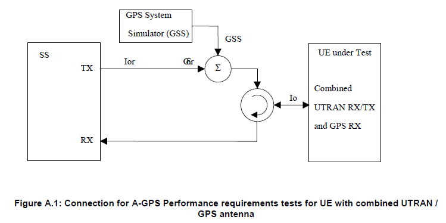 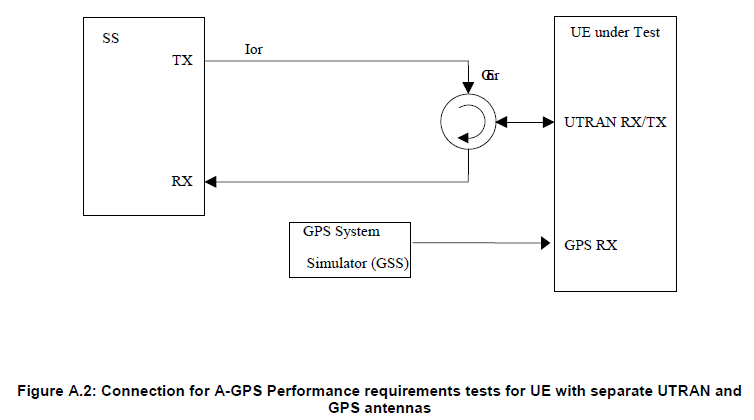
Generic Protocol Sequence for A-GPS Test
There are three major types of protocol sequence defined in 34.108 7.5 Test procedures for A-GPS Performance requirements testing. The each of A-GPS test cases defined by 34.171 uses one of these protocol sequence. My recommendation is always to understand the overal protocol sequence with a certain level of details for any test cases. It will help you not only understand the test purpose/method but also troubleshooting those test cases.
<< Normal UE based A-GPS procedure >>
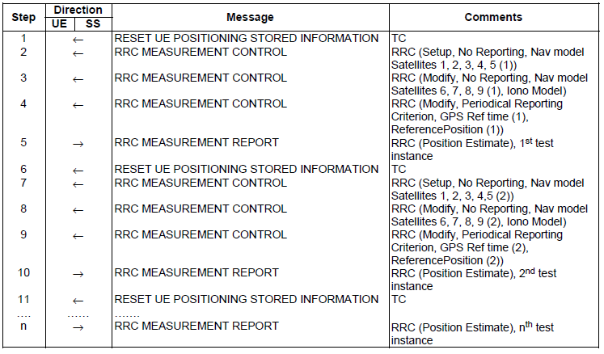
<< UE based A-GPS procedure for moving scenario and periodic update test case >>
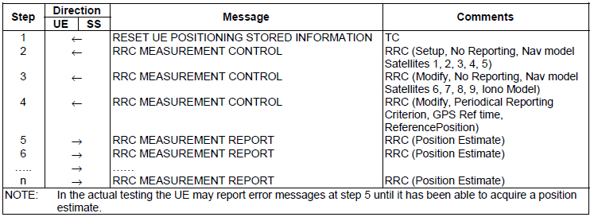
<< Normal UE assisted GPS procedure >>
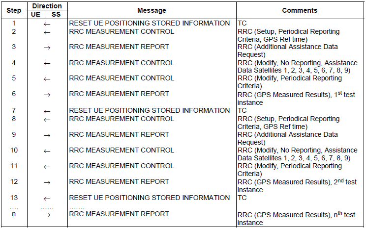
Following is the test case list from 3GPP TS 34.171.
5.2.1 Sensitivity Coarse Time Assistance : This test case is to check how low GPS signal a UE can detect and come up with the correct location estimate. UE should detect at least GPS signal with -147 dBm.
5.2.2 Sensitivity Fine Time Assistance : This is almost same as 5.2.1 except that Network send one additional information "GPS Fine Time assistance error range".
5.3 Nominal Accuracy : This test is to check how much the location estimate accuracy can be when UE is getting ideal (very high quality) GPS signal. Protocol side setup is almost the same as 5.2.1 but GPS signal is -130 dBm (almost 17 dB higher than 5.2.1 case). So the location estimate tolerance is much narrower than 5.2.1 (In 5.2.1, the required location estimate tolerance 100 m, but in this test case the estimate tolerance is only 30 m)
5.4 Dynamic Range : GPS reciever has to receive signals from multiple satellite (4 satellite for normal operation). In many cases, the signal strength (quality) from each of those satellite are not same for various reasons. So the reciever has to be able to tolerate those signal strength differences from multiple satellite. This test cases is to check how well the reciever can detect the signals with wide strength differences. In the test, the strongest signal is -129 dBm and the weakest signal is -147 dBm.
5.5 Multi path Performance : This test case is to test how well UE can detect the signal under the condition that some of the satellite signal get reflected in the path.
5.6 Moving Scenario and Periodic Update Performance : This test case is to test how much accurately a UE can estimate the location in the moving condition where the UE is moving along the path as defined below.
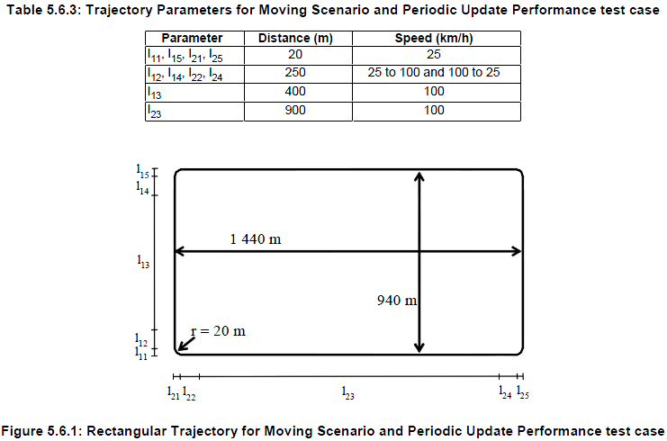
If you read this page from the beginning up to this point, you would think the technology for locating your position is much more complicated than you may think. Yes.. it is complicated. As a matter of fact, it is even more complicated than described in this page. But the outcome of all the technology is disappointingly simple. It is just the two numbers (coordinate on Earth) as shown below. This is the outcome of 'Global Positioning System'.
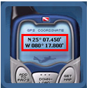
Even though these two numbers are obtained by such a super high technology, the number itself does not mean much to you. To make these numbers meaningful for you, you need specail SERVICEs. For example, if you combine the number (your position coordinates) on to a map service as follows, then those number become much more meaningful to you.
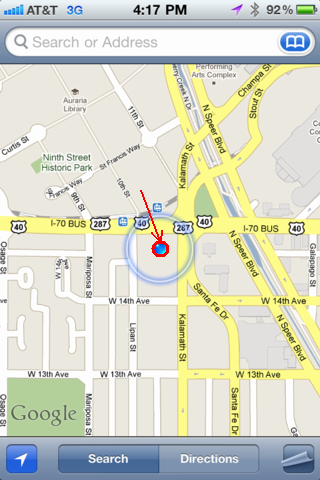
This (GPS location data + Geographical Map) would be the simplest service you can get. There can be more useful service you can implement. What if my device can automatically locate my position and display all the nearby Starbucks as shown below ? (The map below is captured from GoogleMap and this is not combined with GPS. I manually typed in a location. I put this map just to show you a possible result of "GPS location data + some service").
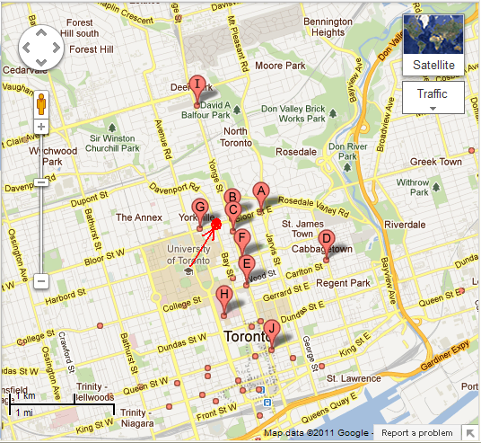
As I described here, you can combine your location data (the two numbers provided by GPS system) with some other information (we call this a 'service') to provide you more useful (meaningful) information. This kind of service is called 'LBS(Location Based Service)'.
So my definition of LBS is 'LBS is any additional information service to make your location data (THE two number) more meaningful to you'.
Here goes a couple of other definitions for LBS that I captured from internet. Of course, you can have your own definition and I encourage you to make your own definition for anything. It would be one of the best way to learn new things.
A Location-Based Service (LBS) is an information or entertainment service, accessible with mobile devices through the mobile network and utilizing the ability to make use of the geographical position of the mobile device LBS can be used in a variety of contexts, such as health, indoor object search, entertainment, work, personal life, etc. LBS include services to identify a location of a person or object, such as discovering the nearest banking cash machine or the whereabouts of a friend or employee. LBS include parcel tracking and vehicle tracking services. LBS can include mobile commerce when taking the form of coupons or advertising directed at customers based on their current location. They include personalized weather services and even location-based games.
A service provided to a subscriber based on the current geographic location of the MS. Location-based services (LBS) provides service providers the means to deliver personalized services to its subscribers
|